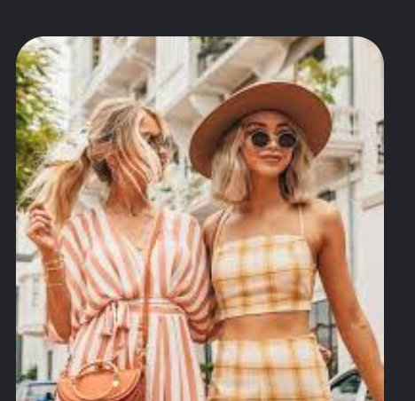
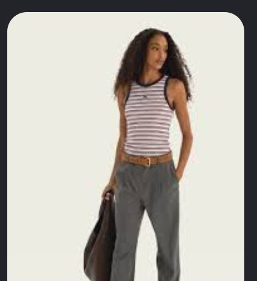
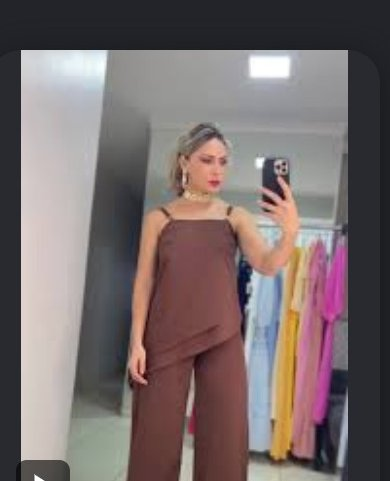
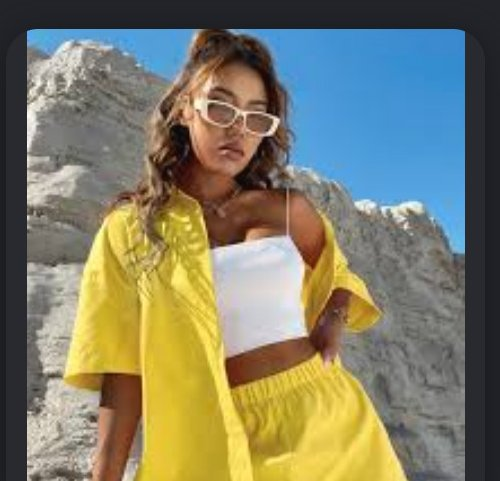
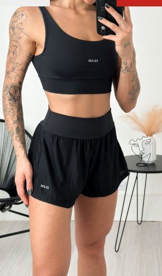

Momento da conta
M3 · Escala em transição sazonal, com risco de entrar em M4 · Platô se a curva A de inverno não for substituída rapidamente.
A conta não está sem novos produtos: já existem sinais fortes de que alguns vestidos de verão podem substituir jaquetas e conjuntos de inverno. O problema é que D2 e parte de D3 ainda estão orientados majoritariamente para a curva anterior.
Scorecard revisado
| Dimensão | Nota | Diagnóstico |
|---|---|---|
| D1 Produtos | 3,7/5 | Dois potenciais heroes de verão já validados; estoque e cauda longa continuam críticos |
| D2 Ads | 3,0/5 | Mídia rentável, mas concentrada quase integralmente em produtos de inverno |
| D3 Afiliados | 4,0/5 | Rede robusta, porém criativos e autorizações de verão ainda são insuficientes |
| D4 Social | Não mensurado | Deve liderar a mudança de narrativa de inverno para primavera/verão |
Nova prioridade: acelerar a migração de D1, D2 e D3 para a curva de verão sem interromper abruptamente o caixa gerado pelo inverno.
D1 · Produtos e transição sazonal
Nova curva de verão
Os produtos recentes e reativados mostram níveis muito diferentes de validação:
| Produto de verão | Ativação recente | Visualizações | GMV | GMV/1.000 views | Classificação |
|---|---|---|---|---|---|
| Vestido indiano longo ciganinha | Segunda | 107.861 | R$ 18.872 | R$ 175 | Novo hero |
| Vestido indiano curto ciganinha | Hoje | 164.098 | R$ 20.964 | R$ 128 | Novo hero |
| Vestido curto manga morcego | Quarta | 116.281 | R$ 4.153 | R$ 36 | Challenger |
| Blusa assimétrica/kit muscle | 07/08 | 108.345 | R$ 3.183 | R$ 29 | Challenger |
| Macaquinho camponesa floral | 08/08 | 68.839 | R$ 1.640 | R$ 24 | Challenger |
| Vestido boho bordado | Quinta | 96.443 | R$ 1.117 | R$ 12 | Necessita correção |
| Vestido Elisa boho | Terça | 36.993 | R$ 321 | R$ 9 | Necessita correção |
| Vestido Laura manga longa | Terça | 65.164 | R$ 103 | R$ 2 | Baixa prioridade |
| Vestido longo elastex 3 tiras | Hoje | Sem histórico | · | · | Lançamento/teste |
Principal descoberta
Os dois vestidos ciganinha já apresentam eficiência comparável ou superior aos heroes de inverno:
| Produto de inverno | GMV/1.000 views |
|---|---|
| Conjunto de cotelê | aproximadamente R$ 121 |
| Jaqueta suede principal | aproximadamente R$ 93 |
| Jaqueta couro PU | aproximadamente R$ 23 |
Comparação:
- Vestido longo ciganinha: R$ 175 por mil visualizações.
- Vestido curto ciganinha: R$ 128 por mil visualizações.
Portanto, a nova curva A não é apenas hipotética. Ela já começa a aparecer.
Nova classificação do portfólio
Curva A de verão · escalar
- Vestido indiano curto ciganinha.
- Vestido indiano longo ciganinha.
Esses produtos devem receber imediatamente:
- Estoque profundo por cor e tamanho.
- Campanha GMV Max própria.
- Amostras direcionadas.
- Novos vídeos.
- Autorização para Shop Ads.
- Participação nas campanhas comerciais.
Curva B · desenvolver
- Vestido curto manga morcego.
- Blusa assimétrica/kit muscle.
- Macaquinho camponesa floral.
- Vestido longo elastex 3 tiras.
O vestido elastex tem 491 unidades disponíveis, mas ainda não possui sinal de venda. É o principal produto de exploração: tem estoque suficiente para escalar, mas precisa provar CTR e conversão antes de receber verba alta.
Curva C · corrigir ou retirar do foco
- Vestido boho bordado.
- Vestido Elisa.
- Vestido Laura.
- Vestido Yara.
- Produtos antigos de verão com visualização alta e GMV muito baixo.
Esses produtos precisam de revisão de: preço, imagem principal, modelagem/tamanhos, demonstração no corpo, estampa, frete, oferta e prova social. Não devem receber tráfego pago indiscriminadamente.
D2 · Migração da mídia
O GMV Max atual ainda está apoiado em: conjunto de cotelê, jaqueta suede, sobretudo, jaqueta couro PU e blazer.
Isso explica parte da queda semanal:
- Receita: −33,97%.
- Pedidos: −32,31%.
- ROI: −17,77%.
- CPA: +18,64%.
Além de possíveis problemas de estoque e saturação, a demanda começa a migrar para peças menos pesadas.
Estratégia de transição
Não desligar toda a curva de inverno de uma vez. O conjunto de cotelê ainda apresenta ROI 9,02 e continua sendo um grande gerador de caixa.
Fase 1 · próximos 14 dias
Distribuição recomendada do investimento:
- 55%: inverno ainda rentável.
- 30%: vestidos ciganinha.
- 15%: exploração de verão.
Dentro do inverno: manter conjunto de cotelê; manter blazer enquanto o ROI permanecer saudável; reduzir sobretudo; renovar ou reduzir jaqueta suede; controlar jaqueta couro PU pela margem.
Dentro do verão: campanha específica para vestido curto ciganinha; campanha específica para vestido longo ciganinha; teste separado para vestido elastex; não misturar todos os vestidos em uma única campanha.
Fase 2 · após validação
Se os vestidos sustentarem ROI e estoque:
- 35–40%: inverno residual.
- 50–55%: verão validado.
- 10%: novos produtos.
Gates de escala
Um produto de verão só deve aumentar verba quando alcançar:
- Mínimo de 10–15 pedidos.
- ROI acima do ponto de equilíbrio.
- CPA compatível com a margem.
- Estoque para pelo menos 21 dias.
- Disponibilidade nos principais tamanhos.
- Pelo menos três criativos vendedores.
D3 · Redirecionamento dos afiliados
A rede de afiliados já está desenvolvida, mas ainda está produzindo principalmente para os heroes de inverno.
Situação dos produtos de verão
- Vestido curto ciganinha: 88 creators compartilhando, apenas 2 vídeos autorizados para Shop Ads.
- Vestido longo ciganinha: 86 creators compartilhando, zero vídeos autorizados.
- Vestido curto manga morcego: 407 creators compartilhando, apenas 1 vídeo autorizado.
- Vestido longo elastex: apenas 1 creator compartilhando, zero vídeos autorizados.
O problema não é apenas quantidade de creators. É a baixa disponibilidade de conteúdos autorizados e comprovadamente vendedores para mídia.
Plano de creators para o verão
Grupo 1 · creators vendedores atuais
Acionar imediatamente: vlogdylua, Paula Indica, Rafaella Brasil, Marcela Franciscato, thamiressc0 e creators que já vendem moda feminina com demonstração no corpo.
Enviar primeiro:
- Vestido curto ciganinha.
- Vestido longo ciganinha.
- Vestido elastex.
- Manga morcego e macaquinho floral.
Grupo 2 · prospecção específica
Buscar microcreators de: moda feminina, looks de verão, moda boho, vestidos para festas e viagens, moda praia e resort, looks "parece de loja cara", moda feminina 30+ e 40+, plus size quando houver grade adequada.
Hooks recomendados
- "O vestido que parece caro, mas está no TikTok Shop."
- "Curto ou longo: qual versão você escolheria?"
- "O detalhe das costas muda completamente esse vestido."
- "Três formas de usar o mesmo vestido no verão."
- "Vestido leve que não marca."
- "Look pronto para viagem, almoço e festa."
- "Esse vestido foi feito para usar sem complicação."
- "A estampa e o movimento dele no corpo."
- "Qual cor combina mais comigo?"
- "Achei o vestido boho perfeito para o verão."
A fórmula vencedora da Lírios Store continua válida: produto no corpo + textura/movimento + pergunta simples + preço/oferta + CTA.
Amostras
Redirecionar o orçamento de amostras:
- 60% para os dois ciganinhas.
- 20% para o elastex.
- 10% para manga morcego.
- 10% para macaquinho e blusa assimétrica.
Não enviar amostras de toda a cauda de verão. O objetivo é criar densidade de conteúdo nos possíveis heroes.
D4 · Social e LIVE
Mesmo sem dados quantitativos da conta própria, D4 deve cumprir um papel decisivo na transição: mudar a percepção da loja de "moda de inverno" para "vestidos e looks de primavera/verão".
Pilares editoriais
Provador dos novos vestidos; curto versus longo; combinação de cores; look para viagem; look para fim de semana; vestidos para festas diurnas; caimento em diferentes corpos; comparação de tamanhos; bastidores de reposição; "o mais vendido da semana"; respostas a dúvidas de tamanho e transparência.
LIVE
Estrutura recomendada:
- Live exclusiva de lançamento dos ciganinhas.
- Provador com pelo menos duas modelos/tamanhos.
- Oferta progressiva por produto.
- Estoque e cores exibidos em tempo real.
- Bloco curto de liquidação do inverno no final da live.
- Destaque principal sempre nos produtos da nova estação.
Assim, a LIVE cumpre dois papéis: lançar a nova curva e liquidar o inverno sem manter toda a comunicação presa à estação anterior.
Plano de transição em 30 dias
Semana 1
- Garantir estoque dos dois ciganinhas.
- Revisar grade por tamanho e cor.
- Criar campanhas GMV Max separadas.
- Enviar amostras para os creators vendedores.
- Solicitar autorização de todos os vídeos existentes.
- Produzir pelo menos 15 criativos por hero.
Semana 2
- Testar vestido elastex.
- Rodar primeira LIVE de verão.
- Comparar ROI, CPA e conversão dos ciganinhas com o cotelê.
- Reduzir verba dos produtos de inverno com ROI abaixo do mínimo.
Semana 3
- Escalar o vestido ciganinha vencedor.
- Escolher um challenger entre manga morcego, macaquinho e blusa assimétrica.
- Reabastecer cores/tamanhos mais vendidos.
- Despriorizar produtos de verão com tráfego e baixa conversão.
Semana 4
- Consolidar nova curva A.
- Migrar 50% ou mais da produção criativa para verão.
- Manter inverno apenas nos produtos ainda rentáveis.
- Preparar lançamentos seguintes com base no padrão dos ciganinhas.
Metas
- Ter pelo menos dois heroes de verão representando 30–40% do GMV.
- Conseguir três criativos vendedores por hero.
- Ter dez creators vendedores em produtos de verão.
- Obter pelo menos 20 vídeos autorizados para Shop Ads.
- Manter ROI agregado acima de 5 durante a migração.
- Reduzir dependência do conjunto de cotelê e jaquetas sem derrubar o GMV total.
Tese final revisada
A Lírios Store não precisa procurar sua curva de verão do zero. Os primeiros substitutos já apareceram: vestido curto ciganinha e vestido longo ciganinha. Os dois apresentam eficiência de tráfego comparável ou superior aos maiores produtos de inverno.
A estratégia correta é: usar o caixa do inverno para construir a curva A do verão antes que a demanda pelas jaquetas desapareça.
Curadoria de produtos de verão
Contexto Elevate 4D
A Lírios Store está em M3 · Escala, atravessando uma transição sazonal. A atual curva A é formada principalmente por produtos de inverno (conjunto de cotelê, jaquetas de suede, jaqueta de couro PU, sobretudos, blazer). Esses produtos ainda geram caixa, mas D2 já apresenta queda de receita, pedidos e ROI. Ao mesmo tempo, os vestidos ciganinha mostram que a demanda de verão começou:
- Vestido curto ciganinha: R$ 20,9 mil de GMV.
- Vestido longo ciganinha: R$ 18,9 mil de GMV.
- Ambos apresentam eficiência por visualização comparável ou superior aos heroes de inverno.
Pela metodologia 4D, a prioridade de D1 Produtos é construir a próxima curva A antes da perda completa da sazonalidade anterior. A curadoria abaixo não busca adicionar produtos genéricos. Ela procura: aderência ao estilo boho, indiano, tropical e estampado da Lírios; potencial de demonstração em vídeos e lives; produtos complementares aos vestidos ciganinha; tickets de entrada e intermediários; capacidade de alimentar D3 Afiliados e D2 GMV Max; possibilidade de venda como look completo.
1. Short solto floral boho
Papel em D1: produto de entrada e giro.
Por que combina com a Lírios: estampa floral; modelagem fluida; cintura alta; linguagem de férias e verão; pode ser combinado com ciganinha ou regata; mantém o estilo boho da loja.
Faixa de teste: R$ 59,90–79,90.
Conteúdo para D3/D4:
- "Short soltinho que não aperta a perna."
- "Três blusas para usar com o mesmo short."
- "Look boho completo para o verão."
2. Short-saia floral com amarração
Papel em D1: challenger de verão com alta demonstração visual.
Por que combina com a Lírios: feminilidade próxima à categoria de vestidos; estampa floral e tropical; amarração lateral; cintura alta; aparência de saia com segurança de short; bom produto para viagem, praia e passeio.
Faixa de teste: R$ 59,90–89,90.
Conteúdo para D3/D4:
- "Parece saia, mas é short."
- "O detalhe da amarração muda o look."
- "Você usaria com cropped ou ciganinha?"
3. Conjunto boho de regata e short tropical
Papel em D1: principal candidato a hero de verão.
Por que combina com a Lírios: estampa tropical; visual boho; look completo; peças utilizáveis juntas ou separadamente; permite ticket maior sem depender de vestido; forte potencial para creator e LIVE.
Faixa de teste: R$ 99,90–139,90.
Conteúdo para D3/D4:
- "Um conjunto, três looks."
- "Use junto ou separado?"
- "Look pronto para viagem."
- Provador mostrando movimento e transparência.
4. Conjunto floral verde com regata e short
Papel em D1: versão mais elegante do conjunto de verão.
Por que combina com a Lírios: estampa floral em aquarela; linguagem boho e retrô; aparência mais premium; decote quadrado e modelagem feminina; próximo ao visual "parece de loja cara", que já funciona nos vídeos da conta.
Faixa de teste: R$ 109,90–149,90.
Conteúdo para D3/D4:
- "Parece conjunto de boutique."
- "A estampa de perto é ainda mais bonita."
- "Look elegante sem deixar de ser confortável."
5. Conjunto tropical com cropped de alça e short
Papel em D1: produto de volume e aquisição.
Por que combina com a Lírios: sete variações disponíveis na referência; estampas tropicais; look completo e leve; preço de mercado acessível; forte aderência a férias, praia e verão.
Faixa de teste: R$ 89,90–119,90.
Conteúdo para D3/D4:
- Comparação entre estampas.
- "Qual cor você escolheria?"
- "Look completo por menos que uma peça."
- Vídeos rápidos de troca de estampas.
6. Conjunto cropped lenço e short estampado
Papel em D1: produto fashion e visual para creators.
Por que combina com a Lírios: estampa localizada; cropped com visual de lenço; amarrações; grande variedade de estampas; forte potencial de viralização; próximo da identidade colorida e inspirada na Farm.
Faixa de teste: R$ 99,90–129,90.
Conteúdo para D3/D4:
- "O cropped parece um lenço."
- "Conjunto perfeito para viagem."
- Transições mostrando diferentes estampas.
- Tutorial de amarração.
7. Conjunto cropped com bojo e short estampado
Papel em D1: produto de entrada para validar conjuntos.
Por que combina com a Lírios: estampa de verão; cropped estruturado com bojo; look pronto; preço competitivo; pode validar rapidamente a aceitação da categoria antes de uma compra maior.
Faixa de teste: R$ 79,90–109,90.
Conteúdo para D3/D4:
- "Conjunto com bojo que dispensa complicação."
- "O caimento dele no corpo."
- "Look pronto em menos de um minuto."
8. Conjunto de três peças com kimono
Papel em D1: produto premium e potencial hero de LIVE.
Por que combina com a Lírios: kimono estampado; cropped e short coordenados; linguagem boho e resort; alta percepção de valor; permite diversas formas de uso; excelente para demonstração ao vivo.
Faixa de teste: R$ 139,90–179,90.
Conteúdo para D3/D4:
- "Três peças, vários looks."
- "Com ou sem kimono?"
- "Look de viagem que já vem completo."
- Provador mostrando todas as combinações.
Prioridade de entrada no catálogo
| Ordem | Produto | Função estratégica |
|---|---|---|
| 1 | Conjunto regata + short tropical | Candidato a hero |
| 2 | Short solto floral | Entrada e giro |
| 3 | Short-saia floral | Challenger visual |
| 4 | Conjunto floral verde | Hero premium |
| 5 | Cropped lenço + short | Produto para creators |
| 6 | Conjunto com bojo | Teste de preço/volume |
| 7 | Conjunto com kimono | Premium e LIVE |
Plano de teste 4D
D1 · Produtos: começar com três ou quatro referências; duas estampas por modelo; poucas cores e grade profunda; não repetir o problema atual de dezenas de SKUs sem estoque; medir conversão por estampa, tamanho e modelagem.
D2 · Ads: não anunciar todos os lançamentos juntos; campanha própria para o conjunto tropical; campanha própria para o short/short-saia; escalar somente após pelo menos 10–15 pedidos e margem confirmada.
D3 · Afiliados: enviar primeiro aos creators que já vendem moda feminina; solicitar três formatos (provador, look completo, uso das peças separadamente); exigir autorização para Shop Ads nos melhores conteúdos.
D4 · Social: apresentar a cápsula como uma coleção; trabalhar duas estampas coordenadas; criar séries de "uma peça, três looks"; fazer LIVE de lançamento com provador.
Recomendação final
A primeira compra não deveria incluir os oito produtos. O lote-piloto ideal é:
- Conjunto boho de regata e short.
- Short solto floral.
- Short-saia floral.
- Conjunto floral verde.
Esses quatro produtos cobrem: hero, produto de entrada, challenger e produto premium. Assim, a Lírios constrói uma nova curva de verão coerente com a marca e testável dentro das quatro dimensões.
Referências visuais de verão
Imagens de referência de tendência e de mercado (moodboard para D1 e D4). Não são os SKUs exatos da curadoria acima; servem para orientar estampa, modelagem e linguagem visual.




